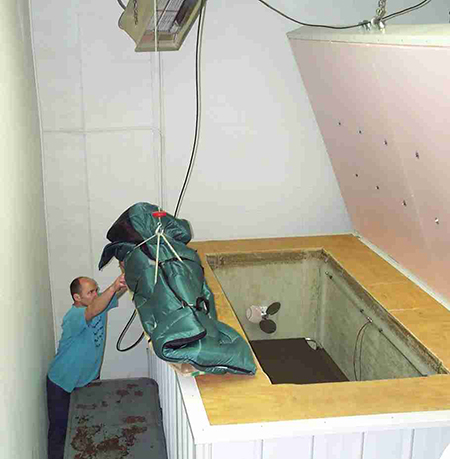

Cryonics Institute

The ultimate goal is to keep the patient preserved until future science is able to repair or replace vital tissues and ultimately revive them. It might seem like an impossible goal to "revive" a "dead" person. The goal of cryonics is to halt that process as quickly as possible after legal death, giving future physicians the best possible chance of reviving the patient by repairing or replacing damaged tissues, or even entire organs using advanced computer, nanotechology and medical equipment and procedures.